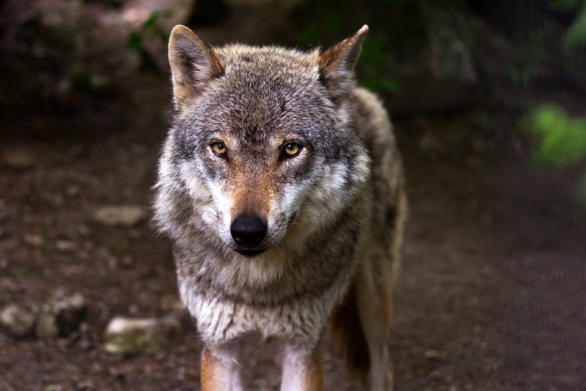

CANINOS:
HISTORIA DEL PERRO
El perro doméstico es un mamífero carnívoro que se integra en la familia Canidae (cánidos),
familia que a su vez abarca a unos animales con unas características morfológicas similares,
como el ser digitígrados, complexión fuerte, boca poderosa con unos caninos muy desarrollados,
además, son unos animales veloces y resistentes.
Una de las características principales que destacan al perro doméstico,
es su destreza a la hora de aprender todo aquello que le enseña el hombre,
por eso se dice que son animales muy inteligentes; por otro lado,
es de destacar su alto grado de socialización con sus congéneres y también con las personas, no obstante,
si viven en manadas o grupos destacará el más fuerte ya que su rol social es jerarquizado.Los perros se comunican de muy diversas maneras,
rastros de orinas a modo de marcaje, se trata de una comunicación olorosa para defender su territorio.
También utilizan vocalizaciones, ladridos, gruñidos e incluso aullidos.
Los gestos con el cuerpo también indican mensajes que transmiten estos animales, por ejemplo,
si mueven la cola reiteradamente sabemos que está alegre, si la mantiene hacia abajo y metida entre las patas indica un estado de miedo o temor

HISTORIA DEL LOBO
Algunas especies de lobos viven en los bosques de los Estados Unidos y en otras áreas donde existen abundantes animales que les sirven
como alimentos. Otros viven en las regiones frías del Ártico, donde casi no viven animales por el intenso frío.
En el ártico viven grandes animales como osos polares y alces.
Un lobo tiene 100 veces mejor sentido del olfato que la media humana. Los lobos viven en manadas,
y estas manadas pueden tener hasta 20 miembros. Estos animales tienen un complicado nivel en su estructura social.
En la manada existen clasificaciones separadas para los machos y para las hembras.Cuál es el significado de los tatuajes de lobos.
El lobo es un animal que inspira respeto, poderoso, salvaje pero fiel a su manada, este antepasado de los perros domésticos cuenta
con una importante carga de simbolismo siendo una imagen muy valiosa dentro de determinadas culturas

HISTORIA DEL PERRO SALCHICHA
El teckel (en español), también llamado dachshund o perro salchicha, es una raza canina.
Su peculiar fisonomía se debe a una mutación genética conocida como bassetismo,
que dota a los ejemplares de unas extremidades cortas en relación con el tamaño del cuerpo.
Según su tamaño y peso puede clasificarse en estándar (9kg-11kg), miniatura (4,5kg-6kg) y Kaninchen,
este último no sólo se caracteriza por un menor peso y tamaño,
sino que presenta unos rasgos físicos distintos. Además el teckel se diferencia en función de la tipología del pelo,
puede ser de pelo duro (generalmente de color gris),
pelo corto y pelo largo, estos dos últimos pueden ser de color negro con rojo fuego,
marrón chocolate o arlequinado.
Su forma es alargada y baja, con una cola larga y hocico estirado, orejas largas y caídas,
patas cortas y uñas negras. Estas patas cortas son quizás la característica más reconocida de la raza y las que facilitan la caza en madrigueras,
que era su principal actividad dentro de la caza, donde se muestra como un rastreador y muy valiente,
y que no dudará en enfrentarse a un fiero jabalí.